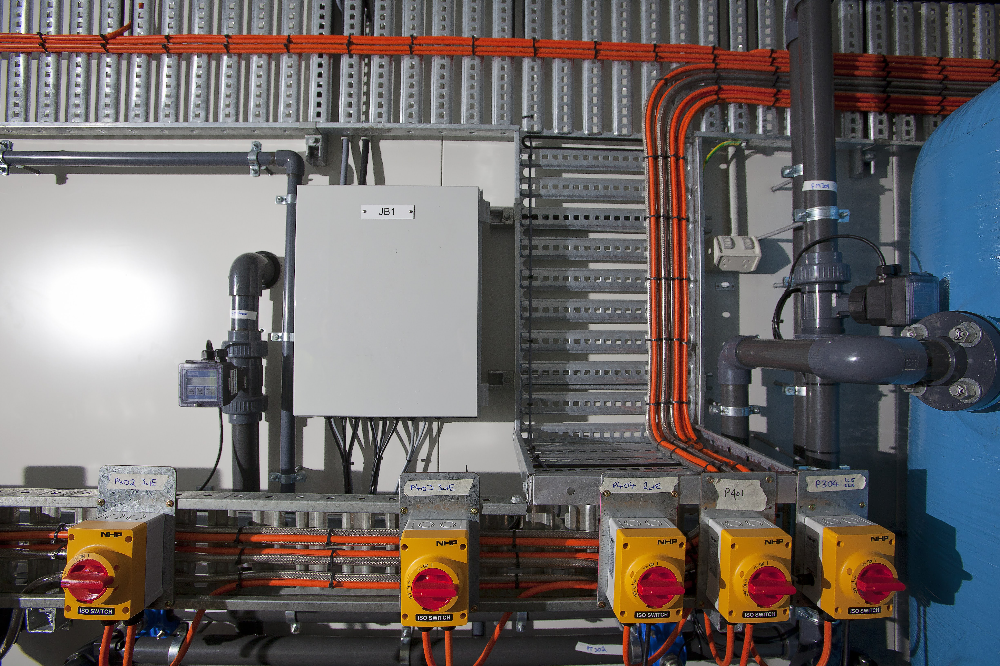
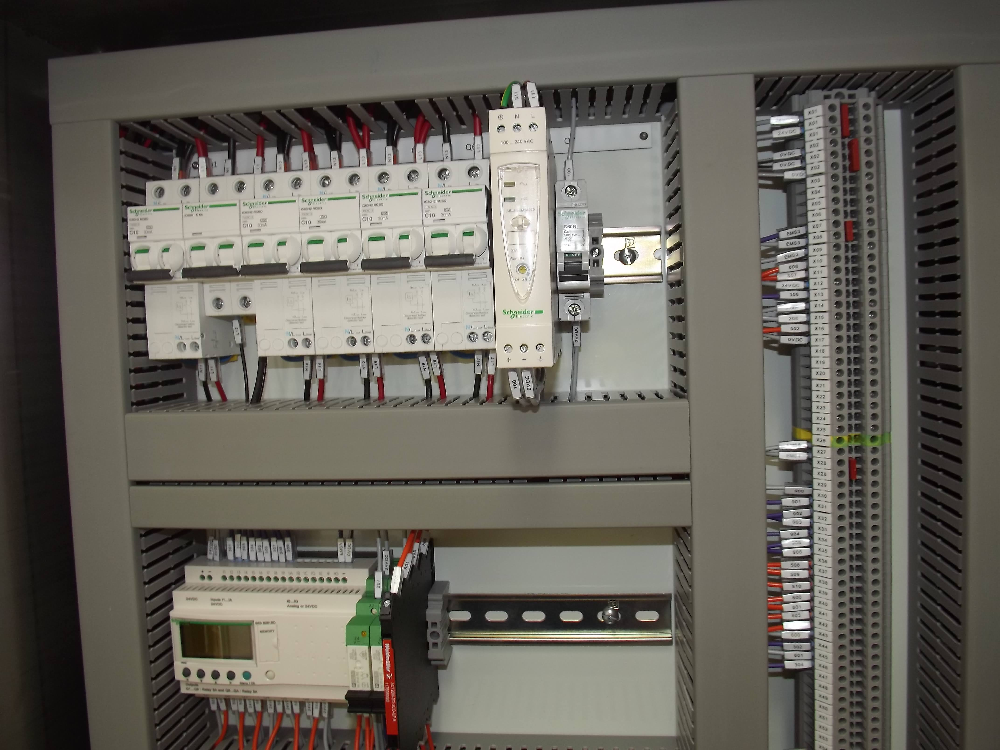
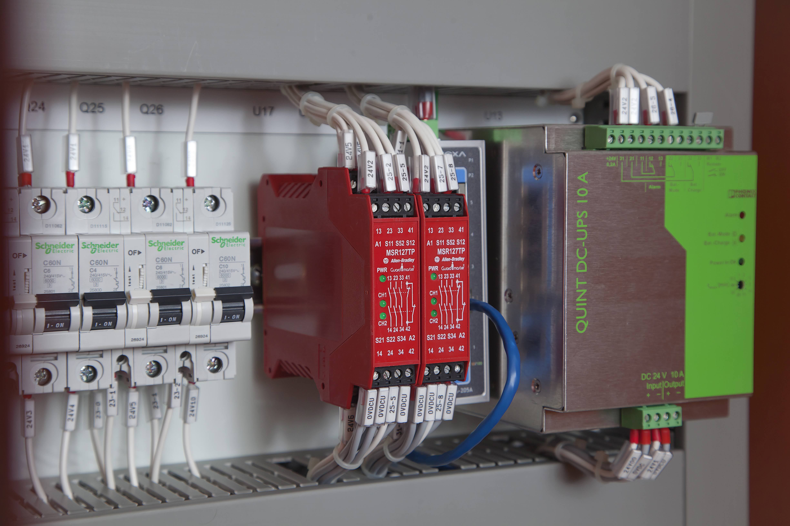

Water and wastewater treatment
Process instrumentation, local isolation and field wiring installed around treatment pipework and equipment.
Capability
Industrial control panels built and commissioned for water treatment, wastewater treatment, manufacturing and mining equipment.

Process instrumentation, local isolation and field wiring installed around treatment pipework and equipment.

Control-panel assembly combining circuit protection, labelled field terminals and programmable control hardware.

Safety relays, protected control circuits and DC backup power integrated into an industrial panel.

A completed multi-section control cabinet with motor drives, distribution, controls and operator interface hardware.